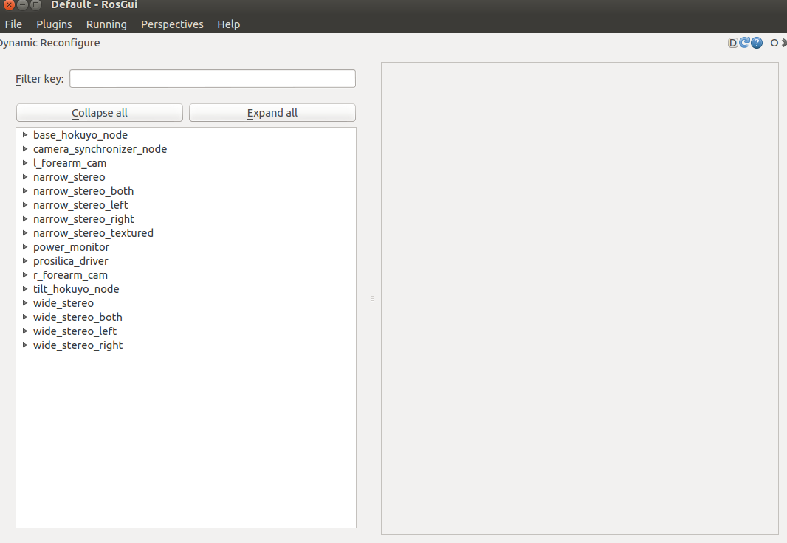

dynamic reconfigure
- dynamic_reconfigure Tutorials 위키 페이지
1. dynamic_reconfigure
dynamic_reconfigure은 실행 중인 ROS 노드의 파라미터를 외부 인터페이스를 이용하여 실시간으로 변경할 수 있게 한다.
2. Utilities
dynamic_reconfigure 파라미터를 수정하는 방법은 크게 두 가지 방법이 있다.
2.1 reconfigure GUI
rqt_reconfigure을 이용하는 방법으로, 실행 방법은 다음과 같다.
rosrun rqt_reconfigure rqt_reconfigure
실행하면 다음과 같은 rqt 화면이 뜨고,  다음과 같이 gui 인터페이스로 파라미터를 조절할 수 있다.
2.2 dynparam command-line tool
dynparam 명령으로 reconfigure을 할 수 있으며, 명령어는 다음과 같다.
rosrun dynamic_reconfigure dynparam COMMAND
COMMAN의 종류는 다음과 같다.
- list : reconfigure이 가능한 node의 리스트를 보여줌
rosrun dynamic_reconfigure dynparam list - get node_name : node_name에 해당하는 configure을 가져옴
rosrun dynamic_reconfigure dynparam get /node - set node_name parameter_name parameter_value : parameter set
rosrun dynamic_reconfigure dynparam set /node parameter_name value - set node_name yaml_dictionary : yaml dictionary 형태로 한 번에 여러 개의 파라미터를 설정
rosrun dynamic_reconfigure dynparam set wge100_camera "{'camera_url':'foo', 'brightness':58}" - set_from_parameters node_name : parameter 서버로부터 해당 노드의 configuration을 로드함
rosrun dynamic_reconfigure dynparam set_from_parameters /node - dump node_name file.yaml : file.yaml 파일에 해당 노드의 configuration을 dump함
rosrun dynamic_reconfigure dynparam dump /node dump.yaml - load node_name file.yaml : file.yaml 파일에 있는 configuration을 해당 노드에 로드함
rosrun dynamic_reconfigure dynparam load /node dump.yaml
3. Tutorials
3.1 How to Write Your First .cfg File
먼저 dynamic_reconfigure을 하기 위해 .cfg file을 생성해야 한다.
#!/usr/bin/env python
PACKAGE = "dynamic_tutorials"
from dynamic_reconfigure.parameter_generator_catkin import *
gen = ParameterGenerator()
gen.add("int_param", int_t, 0, "An Integer parameter", 50, 0, 100)
gen.add("double_param", double_t, 0, "A double parameter", .5, 0, 1)
gen.add("str_param", str_t, 0, "A string parameter", "Hello World")
gen.add("bool_param", bool_t, 0, "A Boolean parameter", True)
size_enum = gen.enum([ gen.const("Small", int_t, 0, "A small constant"),
gen.const("Medium", int_t, 1, "A medium constant"),
gen.const("Large", int_t, 2, "A large constant"),
gen.const("ExtraLarge", int_t, 3, "An extra large constant")],
"An enum to set size")
gen.add("size", int_t, 0, "A size parameter which is edited via an enum", 1, 0, 3, edit_method=size_enum)
exit(gen.generate(PACKAGE, "dynamic_tutorials", "Tutorials"))
.cfg 파일은 python으로 구성이 되어있으며, PACKAGE 이름을 작성하고, dynamic_reconfigure.parameter_generator_catkin을 가져온다.
#!/usr/bin/env python
PACKAGE = "dynamic_tutorials"
from dynamic_reconfigure.parameter_generator_catkin import *
ParameterGenerator()은 파라미터를 정의하는 객체를 생성하는 함수이다. 이 함수로 생성된 객체는 add()함수로 파라미터를 생성한다.
gen = ParameterGenerator()
gen.add("int_param", int_t, 0, "An Integer parameter", 50, 0, 100)
gen.add("double_param", double_t, 0, "A double parameter", .5, 0, 1)
gen.add("str_param", str_t, 0, "A string parameter", "Hello World")
gen.add("bool_param", bool_t, 0, "A Boolean parameter", True)
다음은 add()함수의 인자이다.
- name : param 이름
- paramtype : param 자료형
- level : bitmask로, dynamic reconfigure이 callback 시 해당 parameter 값은 해당 level로
or되어 전달된다. - description : param 설명
- default : param 기본 값
- min : param 최솟값
- max : param 최댓값
아래의 코드는 enum 구조의 파라미터를 생성하는 예시이다.gen.enum()함수를 이용하여 상수 목록을 만들고, 이를 add() 생성자를 이용하여 파라미터를 생성한다.
size_enum = gen.enum([ gen.const("Small", int_t, 0, "A small constant"),
gen.const("Medium", int_t, 1, "A medium constant"),
gen.const("Large", int_t, 2, "A large constant"),
gen.const("ExtraLarge", int_t, 3, "An extra large constant")],
"An enum to set size")
gen.add("size", int_t, 0, "A size parameter which is edited via an enum", 1, 0, 3, edit_method=size_enum)
마지막 라인의 exit()함수는 gen.generate()함수를 이용하여 해당 PACKAGE의 파일을 생성하고 종료하는 명령이다. gen.generate()함수의 두 번째 매개변수는 실행 시 사용되는 노드 이름이며, 세 번째 매개변수는 이 생성된 파일을 가져올 때 사용되는 prefix이다.(예: [name]Config.h 또는 [name]Config.py)
exit(gen.generate(PACKAGE, "dynamic_tutorials", "Tutorials"))
다음으로 .cfg 파일을 실행하능하게 하기 위하여 다음의 명령을 사용한다.
chmod a+x cfg/Tutorials.cfg
그리고 CMakeLists.txt에 추가한다.
#add dynamic reconfigure api
#find_package(catkin REQUIRED dynamic_reconfigure)
generate_dynamic_reconfigure_options(
cfg/Tutorials.cfg
#...
)
# make sure configure headers are built before any node using them
add_dependencies(example_node ${PROJECT_NAME}_gencfg)
3.2 Setting up Dynamic Reconfigure for a Node (python)
Python 노드에서 dynamic_reconfigure을 적용하는 방법을 볼 것이다.
#!/usr/bin/env python
import rospy
from dynamic_reconfigure.server import Server
from dynamic_tutorials.cfg import TutorialsConfig
def callback(config, level):
rospy.loginfo("""Reconfigure Request: {int_param}, {double_param},\
{str_param}, {bool_param}, {size}""".format(**config))
return config
if __name__ == "__main__":
rospy.init_node("dynamic_tutorials", anonymous = False)
srv = Server(TutorialsConfig, callback)
rospy.spin()
처음에 rospy 및 dynamic_reconfigure.server 클래스를 가져오고, 앞서 만든 dynamic_tutorials.cfg의 TutorialsConfig를 가져온다.
#!/usr/bin/env python
import rospy
from dynamic_reconfigure.server import Server
from dynamic_tutorials.cfg import TutorialsConfig
다음은 callback()함수의 정의로, dynamic_reconfigure이 실행되면 수행되는 callback 함수이다. 여기서는 callback 시 간단하게 config에 대한 업데이트를 출력하는 것이 구현되어 있다. 만약 해당 config의 parameter로 해당 노드의 parameter를 변경하고자 할 때, config에 해당하는 parameter를 현재 노드의 parameter에 대입하면 된다.
def callback(config, level):
rospy.loginfo("""Reconfiugre Request: {int_param}, {double_param},\
{str_param}, {bool_param}, {size}""".format(**config))
return config
마지막으로 노드를 초기화 하고, 콜백 기능을 구현한 부분이다.
if __name__ == "__main__":
rospy.init_node("dynamic_tutorials", anonymous = False)
srv = Server(TutorialsConfig, callback)
rospy.spin()
3.3 Setting up Dynamic Reconfigure for a Node (cpp)
Cpp 노드에서 dynamic_reconfigure을 적용하는 방법을 볼 것이다.
#include <ros/ros.h>
#include <dynamic_reconfigure/server.h>
#include <dynamic_tutorials/TutorialsConfig.h>
void callback(dynamic_tutorials::TutorialsConfig &config, uint32_t level) {
ROS_INFO("Reconfigure Request: %d %f %s %s %d",
config.int_param, config.double_param,
config.str_param.c_str(),
config.bool_param?"True":"False",
config.size);
}
int main(int argc, char **argv) {
ros::init(argc, argv, "dynamic_tutorials");
dynamic_reconfigure::Server<dynamic_tutorials::TutorialsConfig> server;
dynamic_reconfigure::Server<dynamic_tutorials::TutorialsConfig>::CallbackType f;
f = boost::bind(&callback, _1, _2);
server.setCallback(f);
ROS_INFO("Spinning node");
ros::spin();
return 0;
}
먼저 dynamic_reconfigure에 필요한 헤더파일과, 앞서 정의한 TutorialsConfig 헤더파일을 가져온다.
#include <ros/ros.h>
#include <dynamic_reconfigure/server.h>
#include <dynamic_tutorials/TutorialsConfig.h>
다음은 callback()함수에 대한 정의로, dynamic_reconfigure이 수행될 때 callback되는 함수이다. config 인자는 적용하고자 하는 configuration이고, level은 변경된 파라미터의 모든 레벨 값을 or 연산으로 계산된 결과이다. 여기서는 새로운 config에 대해 출력하는 역할을 수행한다. 만약 해당 config의 parameter로 해당 노드의 parameter를 변경하고자 할 때, config에 해당하는 parameter를 현재 노드의 parameter에 대입하면 된다.
void callback(dynamic_tutorials::TutorialsConfig &config, uint32_t level) {
ROS_INFO("Reconfigure Request: %d %f %s %s %d",
config.int_param, config.double_param,
config.str_param.c_str(),
config.bool_param?"True":"False",
config.size);
}
main()함수에서 우리가 원하는 configuration 형태의 dynamic_reconfigure server를 정의한다.
int main(int argc, char **argv) {
ros::init(argc, argv, "dynamic_tutorials");
dynamic_reconfigure::Server<dynamic_tutorials::TutorialsConfig> server;
다음으로 callback을 호출하는 변수를 선언하고, 이를 setCallback()함수를 이용하여 dynamic_reconfigure이 수행되면 해당 server에서 callback을 수행한다.
dynamic_reconfigure::Server<dynamic_tutorials::TutorialsConfig>::CallbackType f;
f = boost::bind(&callback, _1, _2);
server.setCallback(f);
마지막으로 ros::spin()함수를 이용하여 해당 노드를 지속시킨다.
ROS_INFO("Spinning node");
ros::spin();
return 0;
}